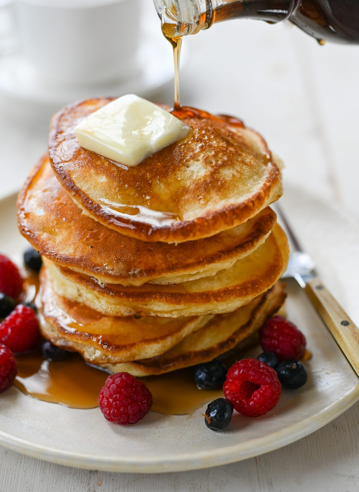

Whole Wheat Pancake

Description
This is a bulk whole wheat pancake mix recipe that my family loves, and it is very easy to make! It also makes good waffles.
Ingredients
- 5 cups whole wheat flour
- 3 cups unbleached all-purpose flour
- 1/2 cup white sugar
- 2 and 1/2 tablespoons baking powder
- 4 teaspoons baking soda
- 4 teaspoons salt
Steps
- Sift the dry ingredients together.
- Make a well, then add the wet ingredients. Stir to combine.
- Scoop the batter onto a hot griddle or pan
- Cook for two to three minutes, then flip.